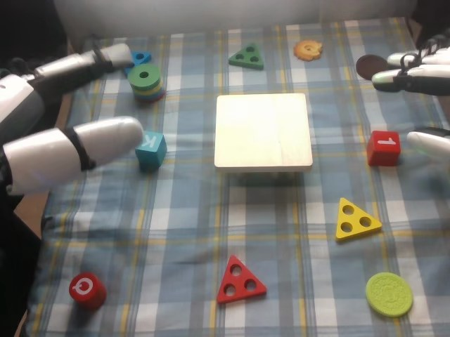

RoboCOIN · Airbot MMK2 · stack_block/episode_000007
Episode 000007

Annotation
From the dedicated visual review of this video (humanoid_action_v1). Plain text · JSON
Observed outcome
- Status
success_visible
- Description
The blue cube (marked K) stands on the white wooden platform near its centre. The red cube (marked 1) ends upright on top of the blue cube, slightly larger than and roughly aligned with it, after the right hand's thumb nudges it from a tilted rest and the hand withdraws. Both cubes are still stacked in the last frame (298); the right hand is clear and the left hand is idle. The red object is a cube, not a cylinder.
Hand roles
- Left
Robot's left hand (image-left): the only hand moving in frames 0-142. It pinches the blue cube between its thumb and fingers, lifts it, carries it to the platform, lowers it onto the platform top, settles it, releases and withdraws. It then stays open, extended and idle at image-left and does not touch the stack.
- Right
Robot's right hand (image-right): static and partly out of view in frames 0-145. From about frame 150 it reaches the red cube, pinches it between upper fingers and thumb (about 167-182), lifts and carries it over the blue cube, lowers it so it rests tilted on the blue cube's top, pushes it upright with its thumb (269-282) and withdraws (285-298).
Coordination
Strictly sequential, no hand-to-hand transfer or simultaneous manipulation: the left hand completes its placement and withdraws (about frame 142) before the right hand begins its pick (from about 150). The left hand's placed blue cube is the support for the red cube; the left hand does not stabilize the stack during the right-hand placement.
Robot-side evidence
- Conclusion
The hand at image-left is the robot's left hand and the hand entering from image-right is the robot's right hand. Image left matches robot left in the head view.
- Evidence
- Telemetry (observation.state names from info.json): left_arm joints 1-6 and left_hand joints 1-12 change in frames 0-130 and the left arm moves again in 130-170 (retraction), the period when the image-left hand grasps, carries and places the blue cube; right_arm joints 1-6 and right_hand joints 1-12 stay nearly constant until about frame 130, then move strongly in frames 130-215 (red cube pick and carry) and again after 270 (withdrawal).
- cam_left_wrist_rgb at frame 50 shows the blue cube between the thumb and fingers, and cam_right_wrist_rgb at frame 200 shows the red cube held in the hand; the head-view hand roles match.
- cam_right_wrist_rgb at frames 50 and 110 shows the left hand and the blue cube in the distance, and cam_left_wrist_rgb at frame 200 shows the right hand carrying the red cube in the distance, so each wrist camera sees the other hand's work.
- Publisher instruction and subtask labels assign the blue block to the left gripper and the red block to the right gripper, which agrees with the visible sequence. The text was not used as the sole evidence.
- Confidence
high
Chronology
| Frames | Observation |
|---|---|
| 0–17 | Initial state: white wooden platform (the 'Mini table') at image centre; blue cube marked K lies on the cloth at image-left of it, beside a blue/green/yellow ring-stack toy; red cube marked 1 at image-right. The robot's left hand (image-left, open) extends toward the blue cube with its white green-lit thumb on the near side of the cube and the dark fingers above it. The right hand is partly visible at the upper-right edge, open and static, with another digit at the right edge beside the red cube. |
| 18–36 | Left arm and hand close in on the blue cube; by frame 30 the thumb is below/right of the cube and the fingers wrap over its left/top side, pinching it (the left wrist camera at frame 50 shows the cube between thumb and fingers). Right hand unchanged. |
| 37–58 | Left hand lifts the blue cube off the cloth and starts carrying it toward the platform with the arm raising; the cube is held up beside the hand at frames 46-58. |
| 59–72 | Left hand carries the blue cube to the platform's left edge, cube tilted in the grasp (K face turned toward the camera at about frames 60-72). |
| 73–96 | Left hand lowers the blue cube onto the platform's top at its left part; the cube touches the platform by about frame 82-90 and is rotated slightly while the hand adjusts. |
| 97–127 | Hand stays over the cube, nudging and settling it on the platform; the cube sits on the platform top left of centre in frames 98-122 and appears centre-left by frame 126. Right hand still static. |
| 128–142 | Left hand releases the cube (fingers opening, about frames 128-136; blue cube standing alone on the platform by about 138) and withdraws up and to image-left; motion blur at 136-142. |
| 143–166 | Blue cube stands upright on the platform, K face up. Left hand ends extended and open at image-left, idle for the rest of the clip. Right arm starts moving: the hand comes down from the upper right toward the red cube (frames 150-166), fingers settling around it. |
| 167–182 | Right hand closes onto the red cube: upper fingers over its top/left, lower digit (thumb) at the right/bottom. The cube rotates slightly in the grasp at frame 174 and is lifted clear of the cloth by frame 182. |
| 183–198 | Right hand lifts the red cube and carries it up and to the left toward the platform; the cube is held tilted, corner down, at frames 186-198. |
| 199–214 | Right hand brings the red cube above the blue cube and lowers it; a lower corner of the red cube meets the blue cube's top by about frames 204-214. |
| 215–268 | Long hold and adjustment: the red cube leans tilted on the blue cube's top with the right hand's thumb pressed against its right face and the upper fingers on its left/top; the arm barely moves (telemetry shows almost no joint change in frames 215-270). |
| 269–284 | Right hand nudges the red cube with its thumb: the red cube rotates from tilted to sitting flat and upright on the blue cube by about frames 276-282. |
| 285–298 | Right hand pulls up and away to image-right (blurred frames 290-298); the red cube stays stacked on the blue cube on the platform. The left hand shifts slightly toward the left edge in the last frames. Clip ends with both hands clear. |
Clip selection
Complete single-task clip retained: the left hand places the blue cube on the white wooden platform, then the right hand places the red cube on the blue cube. These are ordinary phases of one stacking task, so the full video is kept without cropping or a first_substep.
Differences from the publisher annotation
- The publisher instruction says square building blocks go in the centre with the left hand and cylindrical building blocks on top with the right hand. Visibly the left hand places a small blue cube (marked K) on a white wooden platform, and the right hand places a red cube (marked 1) on top; both objects are cubes, there is no cylinder in the action.
- The subtask label 'Place the blue build blocks on the Mini table' matches the white wooden platform at image centre. Subtask labels call the end effectors 'grippers', but the robot has five-finger dexterous hands.
- Timeline: grasp blue 0-46, place blue 47-129, grasp red 130-170, place red 171-286, End 287-298. Visually the left grasp closes about 20-30 and the lift runs to about 58, so the 'grasp' label covers approach, grasp and early lift. The blue cube is on the platform by about frame 90 and release occurs about 128-136, which fits the end of the 'place' label near 129. The right hand's 'grasp red' label (130-170) covers its approach only; its fingers close about 167-182 and the lift is already in the 'place red' label from 171. The 'place red' label spans carrying, lowering, the long tilted hold (about 215-268), the upright nudge and release; 'End' (287-298) coincides with the withdrawal.
- The scene annotation lists the green, red, blue and yellow blocks as front-left or front-right and says the purple block and glasses case are not visible; the visible scene also contains ring-stack, triangle, disc and round distractor toys, and only the blue cube, red cube and platform are manipulated.
Uncertainties
- Exact finger contact points on both cubes are partly occluded in the head view; the thumb-versus-fingers grip is established from the wrist cameras at frames 50 and 200 and the head view at frames 30, 180 and 270.
- The red cube is released gradually during the thumb nudge at about 269-284; the precise frame at which the right hand stops bearing the cube cannot be resolved because of motion blur and occlusion.
- The red cube's final alignment on the blue cube is approximate: it looks slightly larger and slightly rotated relative to the blue cube in frames 282-298.
- Blue cube placement near the platform centre is judged from the oblique head view.
Complete review record action_review.json
{
"prompt_protocol": "humanoid_action_v1",
"prompt_protocol_note": "RoboCOIN Airbot MMK2 is a dual-arm robot with five-finger dexterous hands, not a Humanoid Everyday or NVIDIA GR1 dataset. humanoid_action_v1 is applied by analogy: robot-relative left/right hand, separate per-hand roles, coordination order, per-hand contact changes and the actual end state, with the shared constraint sentence appended verbatim.",
"prompt_provenance": "visually_authored_from_video_and_initial_frame",
"dataset": "RoboCOIN/Airbot_MMK2_stack_block",
"task": "stack_block",
"episode_id": "episode_000007",
"generation_camera": "cam_head_rgb (robot first-person head camera)",
"source_video": "../../original/videos/chunk-000/observation.images.cam_head_rgb/episode_000007.mp4",
"generation_video": "../video.mp4",
"conditioning_first_frame": "../first_frame.png",
"action_prompt": "../actiongeneration_prompt.txt",
"source_frame_count": 299,
"fps": 30,
"resolution": [
640,
480
],
"selected_source_frame_start": 0,
"selected_source_frame_end_exclusive": 299,
"selection_reason": "Complete single-task clip retained: the left hand places the blue cube on the white wooden platform, then the right hand places the red cube on the blue cube. These are ordinary phases of one stacking task, so the full video is kept without cropping or a first_substep.",
"usable_prompt": "The robot's left hand pinches the small blue cube marked K between its thumb and fingers, lifts it, carries it over the white wooden platform, sets it down near the platform's center, then releases and draws back. Afterward the robot's right hand pinches the red cube marked 1 between its fingers and thumb, lifts it, carries it over and lowers it onto the blue cube, nudging the tilted red cube upright with its thumb before pulling away, leaving the red cube stacked on the blue cube. Keep the camera fixed; preserve robot geometry, physically valid joint motion, and normal gripper opening and closing.",
"chronology": [
{
"frames": [
0,
17
],
"observation": "Initial state: white wooden platform (the 'Mini table') at image centre; blue cube marked K lies on the cloth at image-left of it, beside a blue/green/yellow ring-stack toy; red cube marked 1 at image-right. The robot's left hand (image-left, open) extends toward the blue cube with its white green-lit thumb on the near side of the cube and the dark fingers above it. The right hand is partly visible at the upper-right edge, open and static, with another digit at the right edge beside the red cube."
},
{
"frames": [
18,
36
],
"observation": "Left arm and hand close in on the blue cube; by frame 30 the thumb is below/right of the cube and the fingers wrap over its left/top side, pinching it (the left wrist camera at frame 50 shows the cube between thumb and fingers). Right hand unchanged."
},
{
"frames": [
37,
58
],
"observation": "Left hand lifts the blue cube off the cloth and starts carrying it toward the platform with the arm raising; the cube is held up beside the hand at frames 46-58."
},
{
"frames": [
59,
72
],
"observation": "Left hand carries the blue cube to the platform's left edge, cube tilted in the grasp (K face turned toward the camera at about frames 60-72)."
},
{
"frames": [
73,
96
],
"observation": "Left hand lowers the blue cube onto the platform's top at its left part; the cube touches the platform by about frame 82-90 and is rotated slightly while the hand adjusts."
},
{
"frames": [
97,
127
],
"observation": "Hand stays over the cube, nudging and settling it on the platform; the cube sits on the platform top left of centre in frames 98-122 and appears centre-left by frame 126. Right hand still static."
},
{
"frames": [
128,
142
],
"observation": "Left hand releases the cube (fingers opening, about frames 128-136; blue cube standing alone on the platform by about 138) and withdraws up and to image-left; motion blur at 136-142."
},
{
"frames": [
143,
166
],
"observation": "Blue cube stands upright on the platform, K face up. Left hand ends extended and open at image-left, idle for the rest of the clip. Right arm starts moving: the hand comes down from the upper right toward the red cube (frames 150-166), fingers settling around it."
},
{
"frames": [
167,
182
],
"observation": "Right hand closes onto the red cube: upper fingers over its top/left, lower digit (thumb) at the right/bottom. The cube rotates slightly in the grasp at frame 174 and is lifted clear of the cloth by frame 182."
},
{
"frames": [
183,
198
],
"observation": "Right hand lifts the red cube and carries it up and to the left toward the platform; the cube is held tilted, corner down, at frames 186-198."
},
{
"frames": [
199,
214
],
"observation": "Right hand brings the red cube above the blue cube and lowers it; a lower corner of the red cube meets the blue cube's top by about frames 204-214."
},
{
"frames": [
215,
268
],
"observation": "Long hold and adjustment: the red cube leans tilted on the blue cube's top with the right hand's thumb pressed against its right face and the upper fingers on its left/top; the arm barely moves (telemetry shows almost no joint change in frames 215-270)."
},
{
"frames": [
269,
284
],
"observation": "Right hand nudges the red cube with its thumb: the red cube rotates from tilted to sitting flat and upright on the blue cube by about frames 276-282."
},
{
"frames": [
285,
298
],
"observation": "Right hand pulls up and away to image-right (blurred frames 290-298); the red cube stays stacked on the blue cube on the platform. The left hand shifts slightly toward the left edge in the last frames. Clip ends with both hands clear."
}
],
"anatomical_side_evidence": {
"conclusion": "The hand at image-left is the robot's left hand and the hand entering from image-right is the robot's right hand. Image left matches robot left in the head view.",
"evidence": [
"Telemetry (observation.state names from info.json): left_arm joints 1-6 and left_hand joints 1-12 change in frames 0-130 and the left arm moves again in 130-170 (retraction), the period when the image-left hand grasps, carries and places the blue cube; right_arm joints 1-6 and right_hand joints 1-12 stay nearly constant until about frame 130, then move strongly in frames 130-215 (red cube pick and carry) and again after 270 (withdrawal).",
"cam_left_wrist_rgb at frame 50 shows the blue cube between the thumb and fingers, and cam_right_wrist_rgb at frame 200 shows the red cube held in the hand; the head-view hand roles match.",
"cam_right_wrist_rgb at frames 50 and 110 shows the left hand and the blue cube in the distance, and cam_left_wrist_rgb at frame 200 shows the right hand carrying the red cube in the distance, so each wrist camera sees the other hand's work.",
"Publisher instruction and subtask labels assign the blue block to the left gripper and the red block to the right gripper, which agrees with the visible sequence. The text was not used as the sole evidence."
],
"confidence": "high"
},
"arm_roles": {
"left": "Robot's left hand (image-left): the only hand moving in frames 0-142. It pinches the blue cube between its thumb and fingers, lifts it, carries it to the platform, lowers it onto the platform top, settles it, releases and withdraws. It then stays open, extended and idle at image-left and does not touch the stack.",
"right": "Robot's right hand (image-right): static and partly out of view in frames 0-145. From about frame 150 it reaches the red cube, pinches it between upper fingers and thumb (about 167-182), lifts and carries it over the blue cube, lowers it so it rests tilted on the blue cube's top, pushes it upright with its thumb (269-282) and withdraws (285-298)."
},
"coordination": "Strictly sequential, no hand-to-hand transfer or simultaneous manipulation: the left hand completes its placement and withdraws (about frame 142) before the right hand begins its pick (from about 150). The left hand's placed blue cube is the support for the red cube; the left hand does not stabilize the stack during the right-hand placement.",
"observed_outcome": {
"status": "success_visible",
"description": "The blue cube (marked K) stands on the white wooden platform near its centre. The red cube (marked 1) ends upright on top of the blue cube, slightly larger than and roughly aligned with it, after the right hand's thumb nudges it from a tilted rest and the hand withdraws. Both cubes are still stacked in the last frame (298); the right hand is clear and the left hand is idle. The red object is a cube, not a cylinder."
},
"source_annotation": {
"publisher_instruction": "place the square building blocks in the center with left hand and put the cylindrical building blocks on top with right hand.",
"subtask_timeline": [
{
"start_frame": 0,
"end_frame_inclusive": 46,
"indices": [
0,
19,
19,
19,
19
],
"subtasks": [
"Grasp the blue build blocks with the left gripper",
"null",
"null",
"null",
"null"
]
},
{
"start_frame": 47,
"end_frame_inclusive": 129,
"indices": [
2,
19,
19,
19,
19
],
"subtasks": [
"Place the blue build blocks on the Mini table with the left gripper",
"null",
"null",
"null",
"null"
]
},
{
"start_frame": 130,
"end_frame_inclusive": 170,
"indices": [
5,
19,
19,
19,
19
],
"subtasks": [
"Grasp the red build blocks with the right gripper",
"null",
"null",
"null",
"null"
]
},
{
"start_frame": 171,
"end_frame_inclusive": 286,
"indices": [
17,
19,
19,
19,
19
],
"subtasks": [
"Place the red build blocks on the blue build block with the right gripper",
"null",
"null",
"null",
"null"
]
},
{
"start_frame": 287,
"end_frame_inclusive": 298,
"indices": [
15,
19,
19,
19,
19
],
"subtasks": [
"End",
"null",
"null",
"null",
"null"
]
}
],
"scene_annotation": "The green block is in the front-left, The red block is in the front-right, The blue block is in the front-left, The yellow block is in the front-right, The purple block is not visible, The glasses case is not visible",
"use": "Used only as an annotation starting point; chronology comes from the decoded frames."
},
"source_annotation_discrepancies": [
"The publisher instruction says square building blocks go in the centre with the left hand and cylindrical building blocks on top with the right hand. Visibly the left hand places a small blue cube (marked K) on a white wooden platform, and the right hand places a red cube (marked 1) on top; both objects are cubes, there is no cylinder in the action.",
"The subtask label 'Place the blue build blocks on the Mini table' matches the white wooden platform at image centre. Subtask labels call the end effectors 'grippers', but the robot has five-finger dexterous hands.",
"Timeline: grasp blue 0-46, place blue 47-129, grasp red 130-170, place red 171-286, End 287-298. Visually the left grasp closes about 20-30 and the lift runs to about 58, so the 'grasp' label covers approach, grasp and early lift. The blue cube is on the platform by about frame 90 and release occurs about 128-136, which fits the end of the 'place' label near 129. The right hand's 'grasp red' label (130-170) covers its approach only; its fingers close about 167-182 and the lift is already in the 'place red' label from 171. The 'place red' label spans carrying, lowering, the long tilted hold (about 215-268), the upright nudge and release; 'End' (287-298) coincides with the withdrawal.",
"The scene annotation lists the green, red, blue and yellow blocks as front-left or front-right and says the purple block and glasses case are not visible; the visible scene also contains ring-stack, triangle, disc and round distractor toys, and only the blue cube, red cube and platform are manipulated."
],
"uncertainties": [
"Exact finger contact points on both cubes are partly occluded in the head view; the thumb-versus-fingers grip is established from the wrist cameras at frames 50 and 200 and the head view at frames 30, 180 and 270.",
"The red cube is released gradually during the thumb nudge at about 269-284; the precise frame at which the right hand stops bearing the cube cannot be resolved because of motion blur and occlusion.",
"The red cube's final alignment on the blue cube is approximate: it looks slightly larger and slightly rotated relative to the blue cube in frames 282-298.",
"Blue cube placement near the platform centre is judged from the oblique head view."
],
"inspection_coverage": {
"frames_decoded": 299,
"frames_sampled_in_contact_sheets": 150,
"stride": 2,
"contact_sheet_frame_indices": "0,2,...,298 (even indices), 12 per sheet at 400x300",
"native_resolution_frames_inspected": [
0,
30,
60,
90,
120,
136,
144,
166,
174,
182,
186,
194,
214,
240,
250,
268,
270,
273,
276,
280,
288,
290,
298
],
"initial_png_inspected": true,
"initial_png_inspected_note": "generation input/first_frame.png viewed at native 640x480 after the full sequence was understood; it matches decoded frame 0.",
"other_cameras_and_telemetry": "Single frames at indices 50, 110 and 200 of cam_left_wrist_rgb and cam_right_wrist_rgb; observation.state Parquet joint-group deltas for frames 0-30, 30-75, 75-130, 130-170, 170-215, 215-270 and 270-299; joint names from info.json.",
"temporary_files": "Contact sheets and frames were written only to a temporary directory outside the repository and deleted afterwards."
},
"evidence_frame_indices": [
0,
30,
60,
90,
120,
136,
144,
166,
174,
182,
194,
214,
240,
268,
274,
280,
290,
298
],
"review_completed_at": "2026-10-15T20:37:02Z",
"dedicated_review_agent": "review_robocoin_episode_000007"
}